Orange Is the New Black
Taking the show beyond the screen.
Netflix
Cultural partnerships
Fan experiences / Audience development
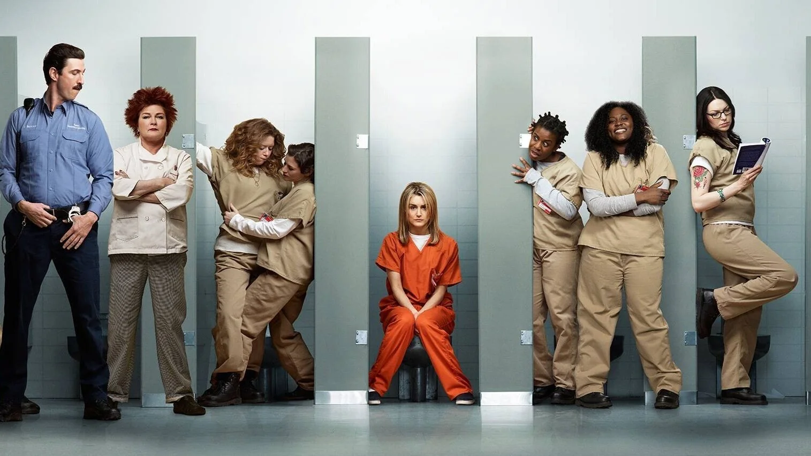
Cross-title storytelling, partnerships, and real-world activations designed to broaden the audience for season two.
The challenge
Find new ways to attract viewers to Orange Is the New Black beyond the main season-two campaign.
The approach
Connect the show with existing Netflix fanbases through mashup videos, then bring it into culture through Pride, partnerships, and fan experiences.
My contribution
I created mashup videos using other Netflix titles, spearheaded the New York Pride sponsorship, partnered with Gilt.com, and developed the Crazy Pyes activation in New York and Los Angeles.
The work.
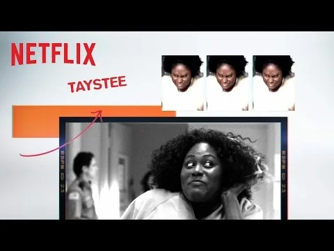
Play film / 01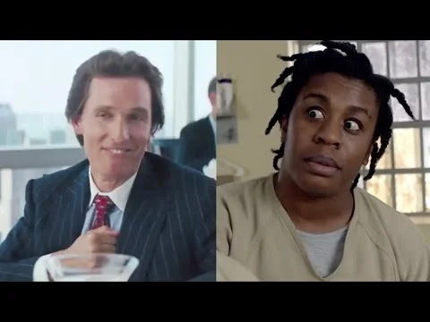
Play film / 02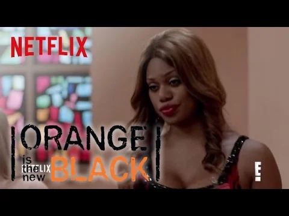
Play film / 03
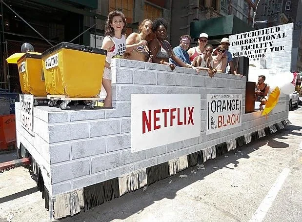

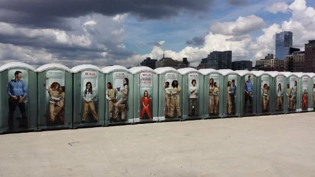

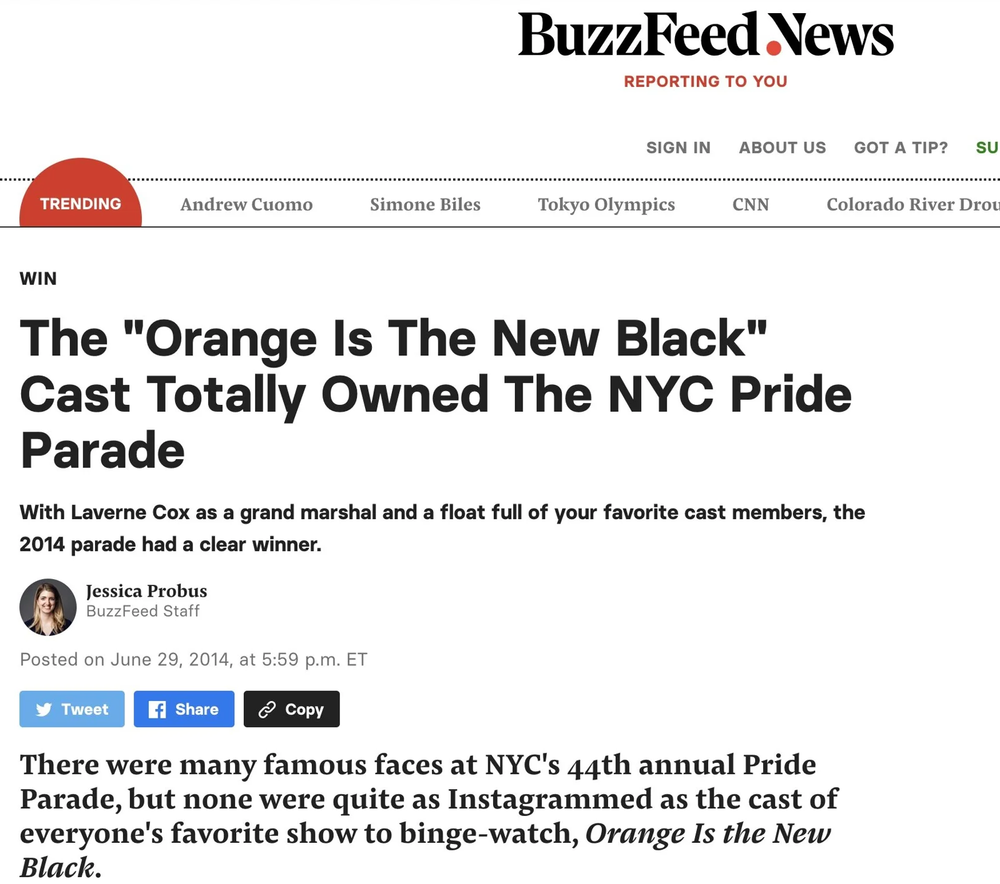

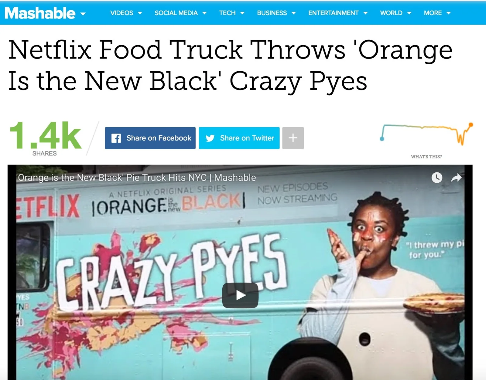

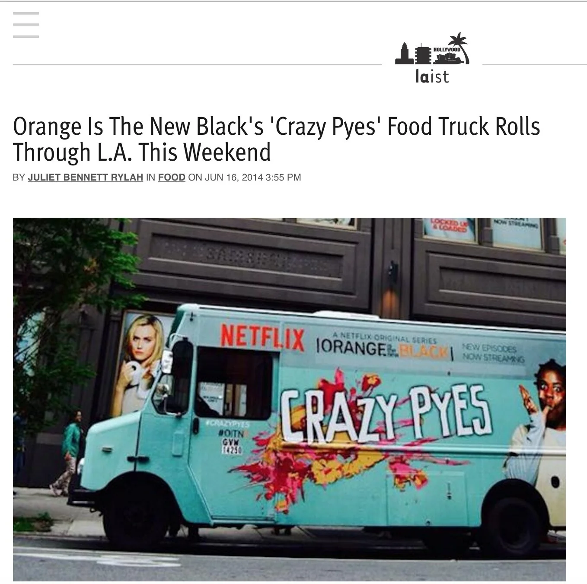

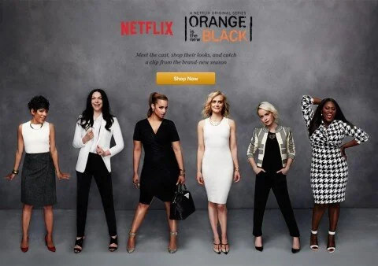

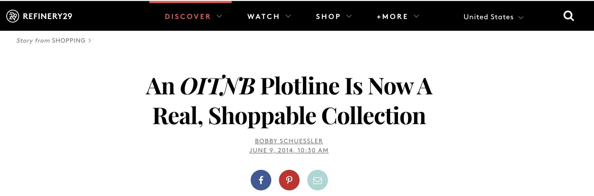